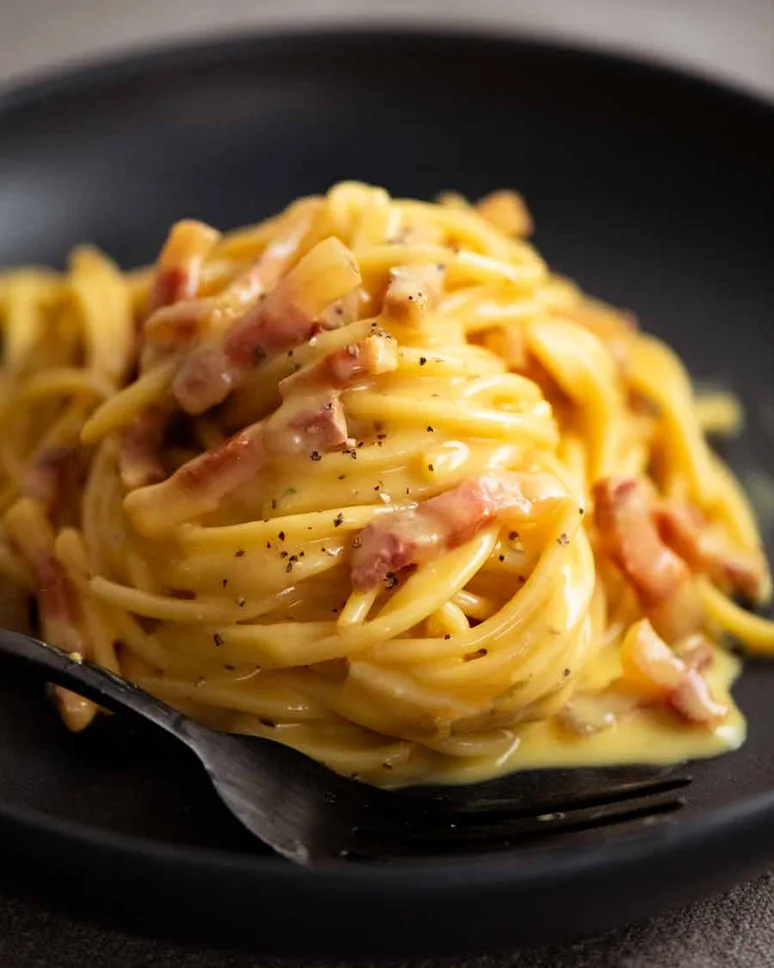

Home
Spaghetti Carbonara

Description
Spaghetti Carbonara is a classic Italian pasta dish made with eggs,
cheese, crispy pancetta, and freshly cracked black pepper. It’s creamy,
rich, and incredibly simple to prepare without using any heavy cream.
This comforting dish comes together in under 20 minutes and is perfect
for a quick, delicious dinner.
Ingredients
- 12 oz spaghetti
- 4 oz pancetta or bacon, diced
- 2 large eggs
- 1 cup grated Parmesan or Pecorino cheese
- Freshly ground black pepper
- Salt to taste
Steps
- Cook spaghetti in salted water until al dente.
- In a pan, cook pancetta until crispy.
- Whisk eggs and cheese together in a bowl.
- Drain spaghetti and immediately toss with pancetta.
- Remove from heat and quickly stir in the egg mixture.
- Season with black pepper and serve warm.